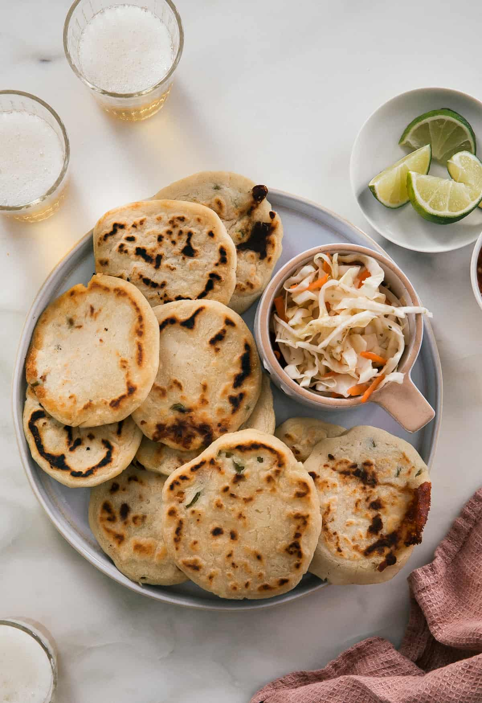

The Best Pupusa Recipe
Return Home

Welcome!
You have arrived at the best recipe for Pupusas.Before we get started lets
dig into the histroy and explore one of my favorite dishes from South America
Found all over South America these Stuffed cornmeal pancakes are the national dish
of El salvador and are also popular in Honduras. Pupusas can be stuffed with a wide
variety of ingredients such as cheese, meat, and beens. They are also usually accompanied
by,curtido, a spicy salsa made from cabbage and tomato.
Now for the list of ingredients and the recipe
List of Ingredients
Curtido
- 1/2 head of cabbage(two cups of shredded cabbage)
- 1 Medium carrot, Grated
- 1 tbsp diced Mexican oregano
- 1 cup hot water
- 1 cup apple cider vinegar
- 1 tsp Salt
- 1 tsp granulated sugar
Pupusa dough
- 3 cups masa harina
- 2 tsp salt
- 2 3/4 cup cold water
Filling
- 2 cups shredded mozzarella cheese
- 1/2 cup pickled jalapeno poppers
- 1/2 cup diced roasted butternut squash
Instructions
To make the crutido:
- In a medium bowl combine the cabbage, carrots, and oregano.
Stir together the hot water, vinegar, sugar and salt. pour over the cabbage mixture.
let come to room temperature, cover and transfer to fridge.
To make the dough
- Whisk together the masa harina and salt.Pour in the cold water and stir using a spatula until combined
Mix the dough by hand to form the dough. use a large spoon or a 2oz scoop to portion the dough into small balls.
Place the dough balls on parchment.
Assembly and cooking
- Lightly coat your hands in oil and flatten the dough balls out in the palm of your hands.
place a small amount of the cheese and peppers in the center fold the dough over like a taco sealing the edges of the dough
Once sealed flatten the dough out gently to form the round cakes.
- In a preheated pan add a tbsp of neatural oil. Add the Pupusas to the pan.
Cook each side for Four to six minutes.Transfer to a sheet pan to keep warm in the oven.
Return Home